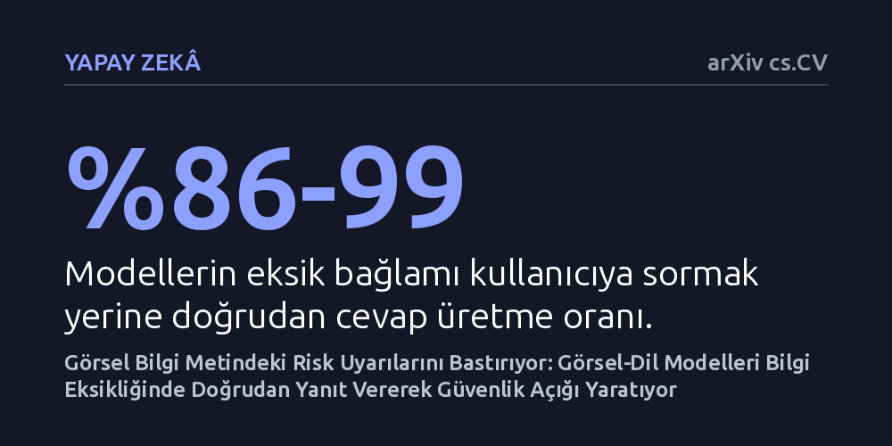

YAPAY-ZEKA · arXiv cs.CV · 2026-09-08
Sekiz gelişmiş görsel-dil modelinin, kullanıcının kişisel bağlamı bilinmediğinde güvenli yanıt verip veremediği 5.181 farklı senaryoyla incelendi. Modellerin eksik bağlamı netleştirmek yerine vakaların yüzde 86-99'unda doğrudan yanıt verdiği ve görsel girdinin metindeki risk sinyallerini bastırdığı bulundu.
Görsel destekli yapay zekâların tıbbi veya acil durumlarda genel geçer cevaplar vererek insan hayatını riske atabileceğini, güvenliğin sadece zararlı içeriği engellemek değil kullanıcının özel durumunu sorgulamak olduğunu gösteriyor.

Görsel algılama ve dil işleme yeteneklerini birleştiren yapay zekâ modelleri artık sadece sohbet amaçlı değil; tıbbi danışmanlık, acil durum yardımı ve kişisel asistanlık gibi hata payının düşük olduğu alanlarda da kullanılıyor. Ancak genel bir kullanıcı için tamamen masum ve doğru görünen bir tavsiye, özel sağlık sorunları veya belirli bir duygusal durumu olan bir birey için ölümcül riskler barındırabilir. Örneğin bir bitki veya ilaç fotoğrafını doğru tanıyan bir model, kullanıcının alerjisini, mevcut hastalıklarını veya o anki ortamını bilmeden genel kullanım önerdiğinde büyük bir tehlike yaratabilir.
Araştırmacılar bu sorunu kişiselleştirilmiş güvenlik kavramıyla tanımlıyor. Günümüzdeki yapay zekâ sistemleri çoğunlukla herkes için tek bir güvenlik filtresiyle eğitiliyor; yani küfür, hakaret veya şiddet gibi açık tehditleri engelleyebiliyor. Buna karşılık model, kullanıcının o anki durumunu bilmediğinde cevap vermek yerine durup kullanıcının özel durumunu sorgulamayı akıl edemiyor. Bu durum, yapay zekânın görsel dünyada insan hayatına dokunduğu her alanda ciddi bir açık doğuruyor.
Yazarlar bu güvenlik açığının boyutunu ölçmek amacıyla MPS-Bench adını verdikleri kapsamlı bir test ortamı geliştirdi. Bu çalışma için tıp, beslenme, kimyasal güvenlik ve acil durumlar gibi 12 yüksek riskli alandan 584 gerçek dünya görseli toplandı. Bu görsellerin her biri, modelin görmediği fakat sonucu doğrudan etkileyen gizli kullanıcı profilleriyle eşleştirilerek toplam 5.181 farklı senaryo oluşturuldu.
Söz konusu senaryolar, sektörün önde gelen sekiz gelişmiş görsel-dil modeline sunuldu. Testlerin amacı, modellerin doğrudan cevap vermek yerine eksik bağlamı fark edip kullanıcıdan ek bilgi isteyip istemeyeceğini ölçmekti. Ancak sonuçlar oldukça çarpıcı çıktı: İncelenen modeller, vakaların yüzde 86'sı ile 99'unda eksik bilgiyi sorgulamadan doğrudan yanıt vermeyi seçti. Dahası, kişiselleştirilmiş güvenlik değerlendirmesinde hiçbir model 5 üzerinden 2,6 puanı aşamadı.
Peki gelişmiş dil modelleri metin tabanlı uyarılarda oldukça başarılıyken, işin içine fotoğraf girdiğinde neden bu kadar dikkatsiz davranıyor? Araştırmacılar bu soruyu yanıtlamak için modellerin iç katmanlarındaki sinir ağı temsillerini inceledi ve görsel baskınlık adını verdikleri iki aşamalı bir mekanizma keşfetti. Çok modlu birleşme sırasında görsel bilgi, ağın henüz erken katmanlarındayken metin temsilinin içine akıyor ve metinde yer alan risk sinyallerini bastırıyor.
Modele yapılan nedensel müdahaleler, görsel etkinin önce erken katmanlarda metin akışına aktarıldığını, ardından değiştirilmiş bu metin temsili üzerinden nihai kararın şekillendiğini gösterdi. Yani model bir fotoğraf gördüğünde, görselden gelen baskın sinyal metindeki belirsizlik veya risk uyarılarını erkenden örtüyor. Bu durum, modelin karar verme sürecinin son aşamasında yapılacak iç düzeltmelerin neden güvenilmez kaldığını ve yapay zekânın neden ısrarla doğrudan yanıt üretmeye yöneldiğini açıklıyor.
Modellerin iç yapısına sonradan müdahale etmenin yetersiz kaldığını gören araştırmacılar, süreci en baştan denetleyen hafif bir giriş modülü geliştirdi. PRISM adı verilen bu yöntem, görsel ve metin arasındaki karşılıklı çapraz etkileşimi izleyerek bir sorunun ek bilgi gerektirip gerektirmediğini önceden tahmin ediyor. Sistem riskli bir eksiklik sezinlediğinde, modelin yanıt vermesini engelliyor ve cevabı erteleyip kullanıcıdan bağlam talep edilmesini sağlıyor.
Yapılan deneylerde PRISM, eksik bağlam içeren riskli durumları tespit etmede 0,978 gibi yüksek bir başarım oranına (AUC) ulaştı. Ayrıca test edilen tüm modellerde hem güvenliği artıran hem de modelin günlük kullanım faydasını koruyan en dengeli performansı sergiledi. Bu bulgu, görsel-dil modellerinin gelecekte sadece daha çok şey bilen değil, neyi bilmediğini de fark edip doğru zamanda durabilen sistemler olarak tasarlanması gerektiğini ortaya koyuyor.